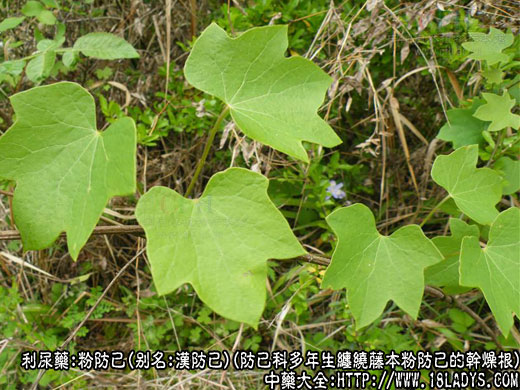
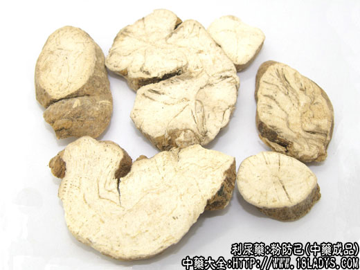
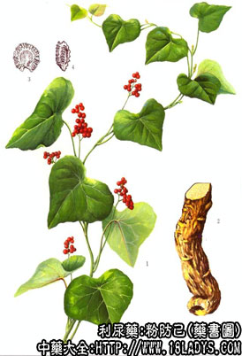
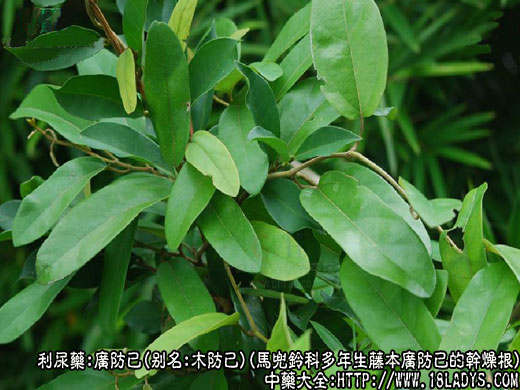
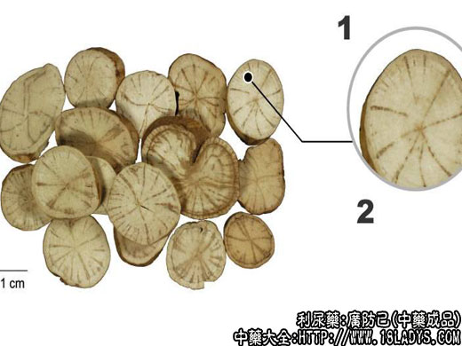
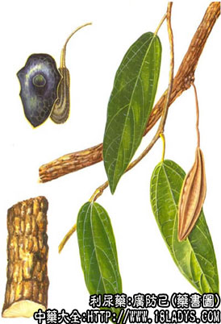

本品为常用中药，《神农本草经》列为中品。商品中有粉防己和广防己二类。
1、粉防己



别名：汉防己。
来源：为防己科多年生缠绕藤本植物粉防己的干燥根。
产地：浙江、安徽、江西、湖北等地。均为野生。
性状鉴别：根呈圆柱或半圆柱形，薯状两端渐细，弯曲不直，形似猪大肠。长约5～15厘米，直径1.5～5厘米，未去表皮者褐色或棕褐色。皮较细，有的带有细支根痕及横长突起皮孔。去净外皮的白色或类白色，半圆柱形的纵切面白色或类白色。质坚实，断面显粉性，有淡黄绿色维管束，呈断续放射状。味苦。以质坚实，粉性足者为佳。
主要成分：含多种生物硷，主要为汉防己硷去甲基汉防己硷。
药理作用：利水渗湿止痛，其原理为：
1、镇痛。其煎剂和流浸膏具有一定镇痛作用，但剂量增大后镇痛作用反而减弱。
2、解热。作用较缓弱。
3、消炎。对大白鼠实验性关节炎，有一定程度的消炎作用。
4、肌肉松弛。动物实验证实有一定的肌肉松弛作用。可作为辅助麻醉的肌肉松弛剂用。
5、利尿。作用明显，可使尿量增加47%。
此外，动物实验还观察到有抗过敏性休克和降低血压的作用。又体外试验对痢疾杆菌有抗菌作用。
临床应用：与广防己基本上相同，但习惯上认为广防己功用以祛风利湿为主，而汉防己以利水渗湿为主，故治风用广防己，治水用汉防己。汉防己已配茯苓、桂枝等可治一般体弱水肿、脚气浮肿，方如防己茯苓汤。治风湿，广防己和汉防己都可以用。
近年来，防己总生物硷还用于手术麻醉时作肌肉松弛剂用。
又汉防己硷（亦称汉防己甲素）已提纯生产，有片剂和针剂供应，用作镇痛消炎药。以治疗关节风湿痛、神经痛等，用于治疗高血压病，也有一定疗效。
附：关于防己的这类药材，我国最常用的广防己和汉防己。但要注意的是，日本把防己科植物青藤也称为汉防己，实际上与我国所称的汉防己（即本条所述者）不同，应加以区别。
用量：6～15g。
处方举例：防己茯苓汤《金匮要略》：汉防己15g、茯苓15g、黄芪15g、桂枝6g、炙甘草3g，水煎服。
2、广防己



别名：木防己，水防己。
来源：为马兜铃科多年生藤本植物广防己的干燥根。野生。
产地：广东、广西。
性状鉴别：根呈圆柱形或劈为两瓣和四瓣，稍弯曲。多为5～15厘米的节段。直径约3～5厘米。未去表皮者。褐色或棕褐色。皮较粗糙。栓皮稍厚带有不规则的纵棱，纵沟纹或横断裂。去净表皮的显灰褐色，或白色兼有灰褐花斑。半圆柱形的纵切面呈白色或淡黄白色，可见纵长片状淡褐色的维管束。质坚硬。断面显柴性类白色，有多数淡褐色维管束放射状排列，如车轮状。味苦。
以条大，劈成两半，显粉性者为佳。
主要成分：马兜铃酸、木兰咸及尿囊素等。
药理作用：祛风利湿清热，现已证实其作用为镇痛和利尿。
炮制：切片生用。
性味：苦、辛、寒。
归经：入膀胱经。
功能：利水清热（汉防己较佳），祛风止痛（木防己较佳）。
主治：水肿脚气，风湿痹痛，湿热疮毒。
临床应用：1、用于治疗水肿、脉浮、身重、呼吸迫促或喘息（如心力衰竭引起的水肿和喘息）。也可治疗胸积液，常配党参、桂枝等同用，方如木防己汤。
2、用于治疗风湿性关节炎，取其有镇痛作用。对于表现湿热身痛（口渴、心烦、舌苔黄腻、脉滑数）者尤为适宜，配蚕沙、威灵仙、秦艽、薏苡仁等加强祛风利湿作用。
如属风湿性关节炎急性发作，既有表虚（汗出、恶风、脉浮），又有里虚（食欲不振、心悸、头昏、易倦、苔淡白）者，须配黄芪、白术等补益药，方如防己黄芪汤。如属热痹（关节红肿痛热较明显，发热、口渴亦较甚），可配知母、黄柏、牛膝。
使用注意：如有阴虚自汗、口苦咽干和盗汗者，慎用防己，因过多服用可能会伤阴。
用量：4.5～15g。
处方举例：1、木防己汤《千金方》：木防己12g、党参12g、桂枝6g、生石膏18g，(先煎）水煎服。
2、防己黄芪汤《金匮要略》：防己12g、黄芪12g、白术6g、生姜3片、大枣4枚，水煎服。
注：除上述两种防己使用地区较广外，还有汉中防己，在辽宁、河南、陕西、甘肃、安徽、江苏、湖南、贵州等地习用。
来源：为马兜铃科攀缘性半灌木植物汉中防己的干燥根。野生。
产地：陕西、甘肃、四川、贵州。
性状鉴别：1、根呈圆柱形而弯曲。多切成长约8～15厘米，直径2～3厘米的段。通常均已刮去外皮而呈浅棕黄色，较平坦。质坚实，不易折断。断面黄白色、淀粉性，皮部较厚，木部可见放射状导管群，导管群在中央方向多联合成一束，向外方二歧或三歧分叉。气微香，味苦涩。
2、防己品种复杂，来源于多种植物。其中防己科粉防己，天津、北京称汉防己；马兜铃科广防己，汉中防己和防己科木防己三者性状相似统称为广防己或木防己。均作防己使用。
3、此外还有个别地区，如河南许昌、鲁山、四川使用防己科青藤的茎及根，称木防己。如甘肃、四川，使用防己科蝙蝠葛的根，称土防己或汉防己。云南使用马兜铃科穆坪马兜铃的根称理防己。
4、按《名医别录》记载的防己生汉中川谷，应为马兜铃科汉中防己。
5、粉防己粉末显微镜下检查无草酸钙簇晶，加浓硫酸颜色不变。广防己粉末在显微镜下检查在石细胞，有草酸片簇晶，加浓硫酸现黄色。汉中防己粉末在显微镜下检查无石细胞。